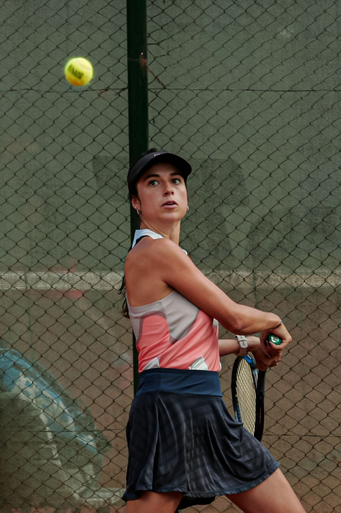
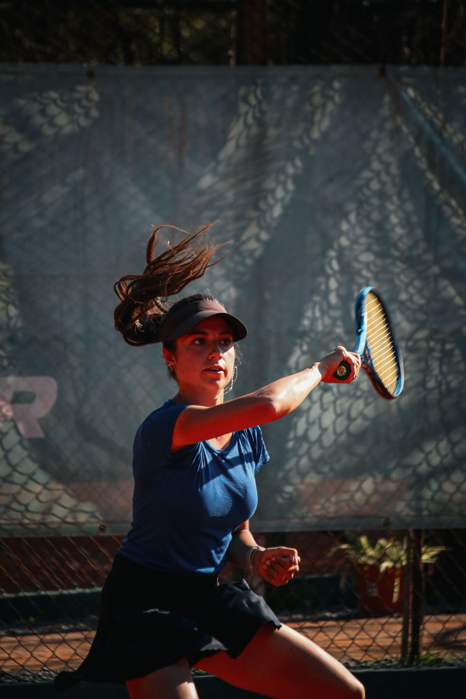

Acerca de mi
¡Estoy encantado de conocerte!

Mi nombre es Lyndsy Camara, nací el 20 de octubre de 2002 en Miami, Estados Unidos. Actualmente vivo en Argentina, donde desarrollo mi vida personal y profesional. Soy profesora de tenis y también jugadora, un deporte que forma parte de mi vida desde muy chica. A lo largo de los años, el tenis no solo se convirtió en una pasión, sino también en una herramienta fundamental para mi crecimiento personal. Este deporte me enseñó valores como la disciplina, la constancia, la responsabilidad y la importancia del trabajo diario para alcanzar objetivos. Gracias a estas experiencias, hoy puedo transmitir esos mismos valores a mis alumnos dentro de cada clase. Como profesora, mi objetivo no es solo enseñar técnica y táctica, sino también acompañar a cada persona en su proceso de aprendizaje, adaptándome a su nivel y ayudándolos a ganar confianza dentro y fuera de la cancha.

Trabajo con alumnos de diferentes edades y niveles, lo que me permite desarrollar una enseñanza dinámica, personalizada y enfocada en el progreso individual. Además, actualmente me encuentro estudiando la carrera de Gestión de Tecnología de la Información en la Universidad Argentina de la Empresa (UADE). Esta formación me permite incorporar herramientas digitales, organización y pensamiento estratégico a mi desarrollo profesional, complementando mi perfil como profesora. Considero que la combinación entre deporte y tecnología me brinda una visión más amplia, permitiéndome adaptarme a nuevos desafíos y seguir creciendo en distintos ámbitos. Mi objetivo es seguir creciendo tanto como jugadora como profesora, perfeccionando mis habilidades y brindando cada vez un mejor servicio, generando un impacto positivo en cada persona que entrena conmigo.